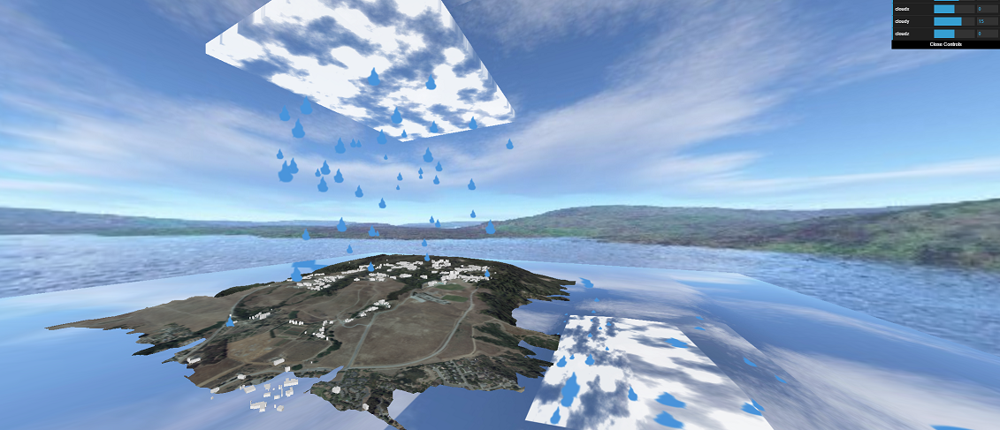

Jonathan Chuang (jrchuang)
Part A & B

You can rotate the camera with left-click+drag.
You can pan the camera with right-click+drag.
The terrain + buildings were generated by myself using aerial orthography, OpenStreetMaps data, and the USGS NED.
The cloud uses perlin noise animated by offset position.
The rain is made out of particle sprites.
The skybox texture was found online somewhere
You can control the height of the water, as well as the position of the rain/clouds using dat.gui.